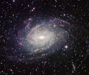

Redshift
The Doppler effect applies to all waves, including the EM Spectrum. It is the change in the observed frequency of a wave being created by a moving object. We can observe this effect when looking at cosmological objects such as galaxies. We call it redshift (and blueshift) when referring to the changes in the light from the galaxies but it is still the Doppler effect. If we know what the original frequency of the wave was when it was emitted we can work out other information about the galaxy such as its velocity and distance relative to Earth. Lucky absorption lines exist.
Absorption Lines
Every element absorbs specific frequencies of the EM spectrum. This allows us to identify what elements objects are made up of by looking at what frequencies of lights are missing. If the object is moving the light we detect will be shifted to a higher or lower frequency. By comparing the absorption lines we detect with what we know they should be we can work out how fast the object is moving relative to ourselves. Move the green slider below to see what effect the galaxy's speed has on the light we detect from it.
Velocity
Comment
Comment
Stationary Absorption Spectrum
Galaxy Absorption Spectrum
Back Next